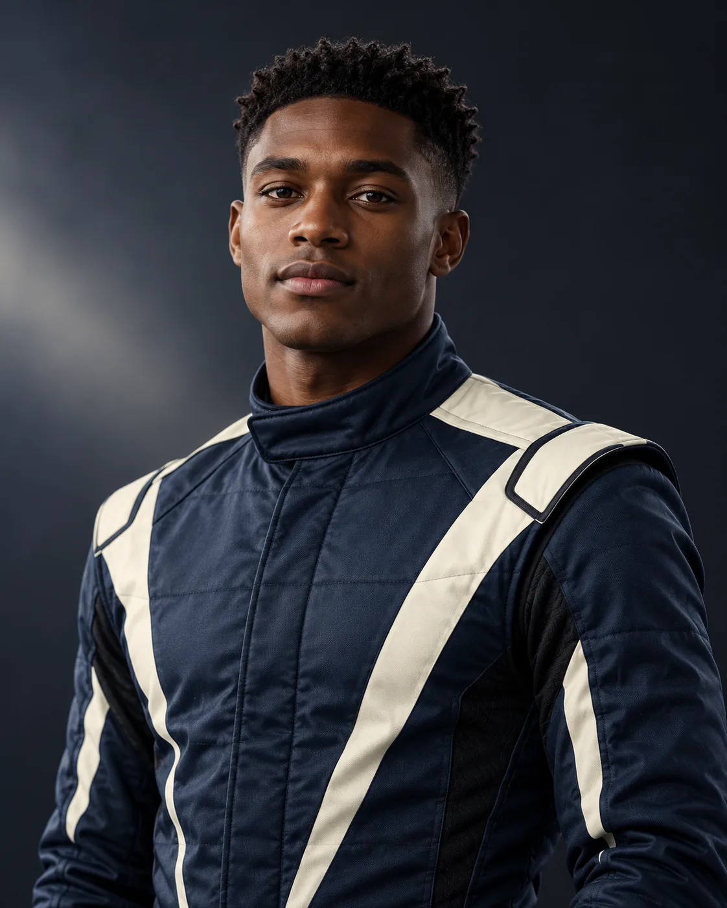

UNITED KINGDOM / STRATOS12THEO
THEO
CLARKE.
THE STRATEGIST
21POINTS
0WINS
0PODIUMS

ON THE GRIDTHE STORY
THE STORY
SO FAR.
A calculating racer whose greatest strength is patience.
Theo drives the IR-32 for Stratos Engineering in the fictional 2032 championship.
EXPLORE THE TEAM ↗